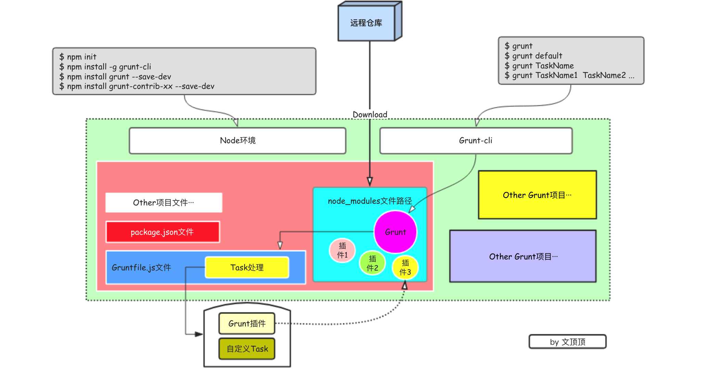

前端工程化系列[03]-Grunt构建工具的运转机制
在前端工程化系列[02]-Grunt构建工具的基本使用这篇文章中，已经对Grunt做了简单的介绍，此外，我们还知道了该如何来安装Grunt环境，以及使用一些常见的插件了，这篇文章主要介绍Grunt的核心组件和运转机制。
Grunt是一套前端自动化构建工具，可以帮助我们简化开发中需要反复处理的任务，甚至可以实现自动构建等功能。
Grunt拥有数量庞大的插件，这些插件能够帮助我们处理开发中遇到的绝大多数构建任务，比如代码的预编译、压缩、代码检查、单元测试等。但为什么在终端输入Grunt相关命令，就能够执行对应的任务，Grunt到底是怎么运转的？这些知识对于深入研究Grunt非常重要,下面我们从Grunt运转的组件和运转机制两方面来展开讨论。
2.1 Grunt的核心组件
node和npm
Grunt项目基于Node.js，Grunt和相关的插件都通过 npm 安装并管理。
Grunt-cli
Grunt命令行用于调用与Gruntfile文件在同一目录中的 Grunt模块，通过-g参数把Grunt命令行安装到全局环境中，这样的话在所有文件目录中都可以调用grunt相关的命令。
在命令行中运行Grunt 相关命令时(比如 $grunt default)，内部会根据node提供的require系统查找来当前目录中安装的 Grunt，如果找到那么加载，并把加载的grunt作为参数传递到Gruntfile文件中，然后执行指定的任务。
Task
Task就是任务的意思，grunt支持自定义任务，也支持使用现成的插件任务。比如向控制台输出一句问候这可以被认为是一个Task，对所有的js文件进行压缩这也是一个Task，通常任务(Task)都是可配置的。
Grunt本地依赖
安装了grunt命令行不等于就安装了grunt，这只是让我们拥有了在命令行中使用grunt相关命令的能力，对于每个需要使用grunt的工程，仍然需要为其配置grunt本地依赖。
Grunt插件(Plugins)
Grunt插件是一系列能够用于不同项目的可配置任务的集合。Grunt插件通常以npm包的形式发布。Grunt官网的插件列表列出了所有可用的Grunt插件，截止当前的插件数量为6,393个，其中带有contrib前缀的插件由Grunt官方开发和维护。
package.json文件
package.json文件用于被npm存储项目的元数据，以便将此项目发布为npm模块。我们可以在此文件中列出项目依赖的Grunt和Grunt插件，保存在devDependencies（开发依赖）配置字段内，我们可以通过$ npm install命令来加载该文件中的所有依赖项。
Gruntfile.js文件
Gruntfile文件是Grunt项目中最核心的文件，该文件同package.json文件一起存放在项目的根目录中，主要用来配置或定义任务（task）并加载Grunt插件。标准的grunt项目中必须拥有package.json和Gruntfile这两个文件。
node_modules文件夹
node_modules文件目录存放着从远程仓库下载的grunt以及所有相关的grunt插件。
2.2 Grunt的运转机制
上面给出了Grunt项目中各主要组件的关系图示，是根据个人的理解绘制的，所以可能并非完全准确，但基本上已经能够说清楚Grunt的运转机制了。
我们在使用Grunt作为项目构建工具的时候，所做的事情大概可以分成三块：准备、配置、执行。
① 准备阶段
准备阶段主要进行以下操作
❏ node环境的安装、npm的安装(在安装node的时候默认安装)
❏ grunt-cli命令行的安装(通过
$ npm install -g grunt-cli命令)
❏ 创建package.json文件(手动创建或通过
$ npm init命令交互式创建)
❏ 配置grunt本地依赖(通过
$ npm install grunt --save-dev下载grunt到项目)
❏ 安装需要的grunt插件(通过
$ npm install grunt-contrib-xx --save-dev命令把需要的插件下载到node_modules目录)
② 配置阶段
配置阶段主要就是创建和编辑Gruntfile文件，在该文件中接收grunt参数并配置Task，注册Task。Task简单说就是任务的意思，我们可以自定义任务，也可以直接使用现成的、一些其他优秀开发者定义好并打包为node模块发布的任务（其实就是grunt插件）。
一般来说，我们总是通过grunt为我们提供的grunt.initConfig方法来对Task(插件)进行配置，如果是该Task是Grunt插件那么还需要先从node_modules目录中加载。
如果对多个Task的执行有指定的顺序或者依赖关系，那么我们可以通过grunt.registerTask方法来注册Task。
③ 执行阶段
在执行阶段，通过在命令行中输入$ grunt task名称的方式来执行指定的任务。
执行Task的时候，可以单个执行，例如：
$ grunt taskName1$ grunt taskName2
也可以用单条命令执行多个Task，每个Task都将按照参数的传入顺序依次执行，例如：
$ grunt taskName1 taskName2
在使用构建工具的时候，这些Task具体怎么执行，执行的顺序等并非是固定不变的，需要结合特定的需求来特殊处理。如果总是有一组Task需要按顺序执行，一般可以使用grunt.registerTask方法来给这组Task设置个别名，这一组的Task以数组的形式传递。
例如：要依次执行js文件的合并、语法检查、代码压缩、css代码压缩等任务，则配置好相关Task后可以像下面这样来设置。
1 | grunt.registerTask("customTask",["concat","jshint","uglify","cssmin"]); |
要执行这组任务的时候，直接执行$ grunt customTask命令即可。